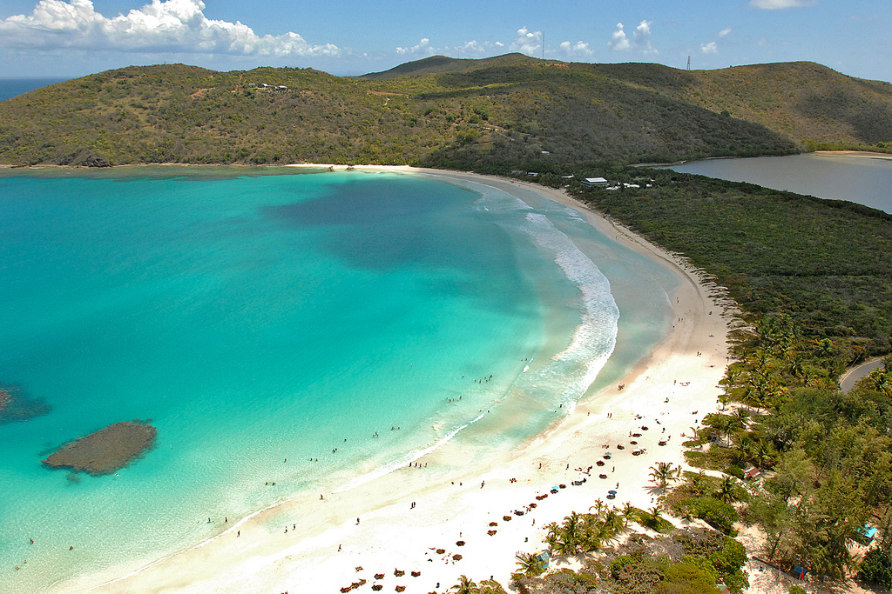
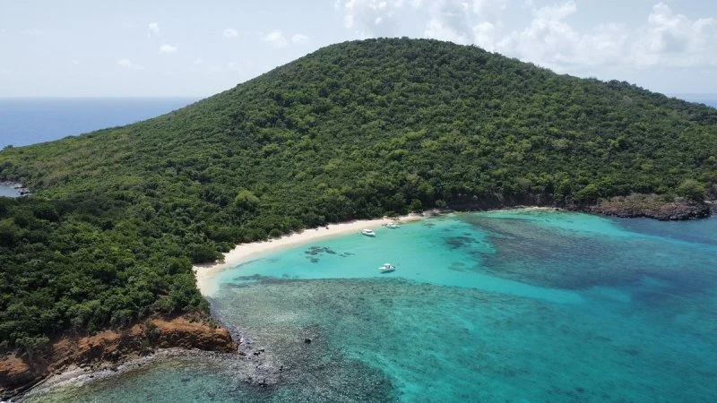
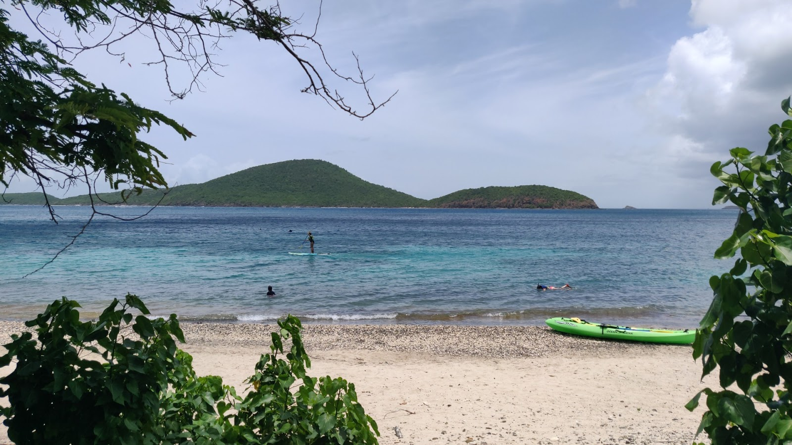

Playa Flamenco
Playa Flamenco es uno de los atractivos más conocidos de Culebra. Se destaca por su arena clara, aguas turquesas y ambiente ideal para nadar, descansar y disfrutar del paisaje costero.
Más informaciónExplora los lugares más reconocidos de Culebra.

Playa Flamenco es uno de los atractivos más conocidos de Culebra. Se destaca por su arena clara, aguas turquesas y ambiente ideal para nadar, descansar y disfrutar del paisaje costero.
Más información
Cayo Luis Peña forma parte de la Reserva Natural Canal Luis Peña. Es un lugar excelente para practicar snorkeling, observar vida marina y disfrutar de una experiencia más cercana a la naturaleza.
Más información
Playa Tamarindo es conocida por sus aguas tranquilas y su riqueza marina. Es una buena opción para hacer kayak, snorkeling y observar tortugas marinas en su hábitat natural.
Más información